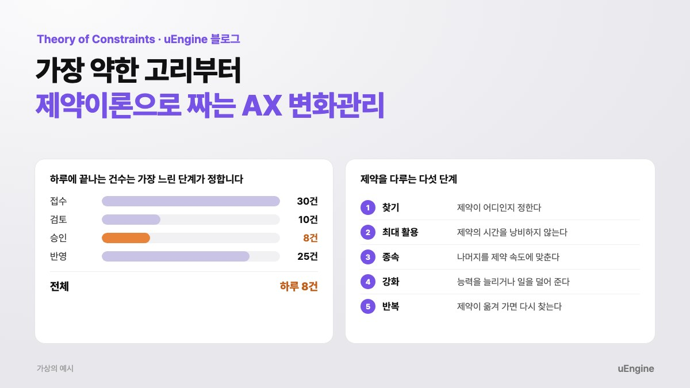

가장 약한 고리부터 — 제약이론으로 짜는 AX 변화관리

1. 교육은 끝났는데 왜 그대로일까
전 직원이 AI 교육을 받았습니다. 문서 요약도, 메일 초안도, 보고서 정리도 빨라졌습니다. 그런데 분기가 지나 고객에게 제안서를 보내기까지 걸리는 시간을 재 보면 달라진 것이 없습니다.
지난 글 「AI 파일럿은 왜 실무에서 멈출까」에서 청구서 한 건의 처리 과정을 통해 그 이유를 살펴봤습니다. AI는 20분 걸리던 일을 3초로 줄였지만, 한 건을 마치는 데 걸린 시간은 1일 40분에서 1일 20분으로 줄었을 뿐입니다. 나머지는 인계와 결재 대기였습니다.
이 현상을 40년 전에 정리한 이론이 있습니다. 바로 제약이론입니다. 이 글에서는 제약이론이 무엇인지, 그리고 왜 AX 전환이 교육이 아니라 진단에서 시작해 변화관리로 끝나야 하는지 설명합니다.
2. 제약이론: 사슬은 가장 약한 고리만큼 강하다
제약이론(Theory of Constraints, TOC)은 이스라엘의 물리학자 엘리야후 골드랫이 1984년 소설 형식의 경영서 『더 골(The Goal)』로 널리 알린 이론입니다. 핵심은 다음과 같습니다. 여러 단계가 이어진 일의 전체 속도는 가장 느린 한 단계, 곧 제약이 결정합니다.
네 단계로 이뤄진 업무를 예로 들어 보겠습니다. 단계마다 하루에 처리할 수 있는 건수가 다릅니다.
| 하루 처리 능력 | 접수 | 검토 | 승인 | 반영 | 하루에 끝나는 건수 |
|---|---|---|---|---|---|
| 지금 | 30건 | 10건 | 8건 | 25건 | 8건 |
| 접수에 AI 도입 | 60건 | 10건 | 8건 | 25건 | 8건 |
| 승인을 12건으로 | 30건 | 10건 | 12건 | 25건 | 10건 |
이해를 돕기 위한 가상의 수치입니다. 주황색은 각 상황의 제약입니다.
접수에 AI를 도입해 처리 능력을 두 배로 늘려도 하루에 끝나는 건수는 8건 그대로입니다. 늘어난 22건은 승인 앞에 쌓일 뿐입니다. 반대로 승인을 8건에서 12건으로 늘리면 전체 처리량이 10건으로 늘고, 이번에는 검토가 새 제약이 됩니다.
골드랫은 이를 이렇게 표현했습니다. "병목에서 잃은 한 시간은 시스템 전체가 잃은 한 시간이다. 병목이 아닌 곳에서 아낀 한 시간은 신기루일 뿐이다."
AI를 어디에 쓸지보다 먼저 물어야 할 질문은 "우리 일은 지금 어디서 막혀 있는가"입니다.
3. 사무 업무의 제약은 대개 기다림에 있습니다
공장에서는 제약이 기계라서 눈에 보입니다. 사무 업무에서는 제약이 보이지 않습니다. 일이 쌓이는 곳이 창고가 아니라 누군가의 받은 편지함과 결재함이기 때문입니다.
Process GPT Lite 튜토리얼 22장의 예제를 보겠습니다. 커피 가맹점의 매장 제안서와 견적서를 만드는 「달빛커피 제안」 프로세스로, 석 달 동안 48건을 처리했습니다. 기록을 분석한 결과는 다음과 같습니다.
- 한 건의 리드타임: 평균 3.2일
- 사람과 에이전트가 실제로 일한 시간: 2.8시간
- 흐름 효율(일한 시간 ÷ 리드타임): 3.7%
- 제약: 재무 검토 담당자 한 명. 하루에 0.9건이 들어오고 1.0건을 처리할 수 있어 가동률이 88%이며, 리드타임의 82%가 이 단계 앞에서 기다린 시간입니다.
가동률이 100%에 가까워질수록 대기 시간은 일정한 비율이 아니라 급격히 늘어납니다. 대기열 이론에 따르면 대기 시간은 대략 가동률 ÷ (1 − 가동률)에 비례합니다. 가동률이 50%일 때를 1로 놓으면 80%에서는 4배, 88%에서는 7배, 95%에서는 19배가 됩니다. 일이 조금만 몰려도 기다림이 몇 배로 늘어나는 이유입니다.
4. 제약을 다루는 다섯 단계
제약이론은 제약을 다루는 과정을 다섯 단계로 제시합니다. 같은 예제에 적용하면 다음과 같습니다. 개선 효과는 튜토리얼에서 적용 전에 계산한 값입니다.
| 단계 | 뜻 | 「달빛커피 제안」에서 |
|---|---|---|
| 1. 찾기 | 제약이 어디인지 찾습니다 | 재무 검토. 가동률 88%, 리드타임의 82%가 이 단계 앞의 대기 시간 |
| 2. 최대 활용 | 제약의 시간을 한순간도 낭비하지 않습니다 | 에이전트가 계산·단가를 점검한 검토 초안을 먼저 만들고 담당자는 확인만: 3.2일 → 1.9일 보완 요청을 줄여 다시 검토하는 일 없애기: 3.2일 → 2.6일 |
| 3. 종속 | 나머지 단계를 제약의 속도에 맞춥니다 | 재무 검토 앞 대기를 2건으로 제한하고, 쌓여 있으면 앞 단계는 급한 건부터 시작 |
| 4. 강화 | 제약의 처리 능력을 늘리거나 일을 덜어 줍니다 | 견적 4,000만 원 미만은 재무 검토 없이: 3.2일 → 1.6일 재무 검토 담당 1명 추가: 3.2일 → 1.9일 |
| 5. 반복 | 제약이 옮겨 가면 다시 1단계로 | 가장 효과가 큰 개선안을 적용해도 제약은 여전히 재무 검토(가동률 63%). 개선 후 제약을 다시 찾습니다 |
Process GPT Lite 튜토리얼 22장의 예제 데이터(48건)로 계산한 값입니다.
이 표가 보여 주는 AX 전환의 교훈은 세 가지입니다.
- AI는 제약에 써야 효과가 납니다. 같은 예제에서 제약이 아닌 평면도 작성을 자동화하면 리드타임은 조금밖에 줄지 않습니다. 평면도가 빨리 끝나도 제안서는 재무 검토 앞에서 기다리기 때문입니다.
- 사람을 늘리기 전에 최대 활용부터 합니다. 사람을 더 뽑기보다 기존 담당자가 확인에만 집중하게 하는 편이 비용도 적게 들고 빠릅니다. 에이전트가 미리 초안을 만들면 됩니다.
- 가장 큰 효과는 규칙을 바꾸는 데서 나왔습니다. 「4,000만 원 미만은 재무 검토 없이」는 기술이 아니라 회사의 정책입니다. 지난 48건 가운데 4,000만 원 미만이 29%였고, 해당 건의 보완 요청률은 7%로 기준 금액 이상인 건(18%)보다 훨씬 낮았다는 기록이 근거입니다.
5. 그래서 변화관리가 필요합니다
세 번째 교훈이 이 글의 핵심입니다. 제약이론으로 찾은 해법은 대개 기술보다 일하는 방식과 규칙의 변화를 요구합니다.
- 규칙을 바꾸려면 합의가 필요합니다. 재무 검토 기준을 바꾸려면 재무 담당과 영업팀이 감수할 위험과 책임을 함께 정해야 합니다.
- 종속은 낯설게 느껴집니다. 앞 단계가 일부러 속도를 맞추면 "왜 일을 안 하느냐"는 말이 나옵니다. 앞에서 서둘러 봐야 제약 앞에서 기다릴 뿐이라는 것을 모두가 이해해야 합니다.
- 역할이 바뀝니다. 직접 초안을 쓰던 사람이 에이전트에게 목표와 완료 기준을 주고 결과를 승인하는 「에이전트 보스」가 됩니다.
- 제약은 옮겨 갑니다. 한 번 고치는 데 그치지 않고, 측정하고 제약을 다시 찾는 습관이 조직에 남아야 합니다.
교육은 도구를 쓰는 법을 알려 주지만 이런 변화까지 만들어 주지는 못합니다. 그래서 변화관리는 교육 다음에 덧붙이는 행사가 아니라, 진단부터 측정까지 이어지는 하나의 프로그램이어야 합니다.
6. 다섯 단계를 프로그램으로: AX 전환 프로그램
유엔진의 AX 전환 프로그램은 제약이론의 다섯 단계와 같은 순서를 따르되, 회사의 일정과 역할에 맞춰 일곱 단계로 구성됩니다. 단계 이름을 누르면 주요 활동, 참여자, 산출물을 볼 수 있습니다.
| 제약이론 | AX 전환 프로그램 | 산출물 |
|---|---|---|
| 1. 찾기 | 1 사전 진단 · 2 병목 찾기 | 밸류 스트림 맵, 우선순위가 매겨진 병목 목록 |
| 2. 최대 활용 | 3 에이전트 · 4 자동화 | 에이전트 적용 후보와 시험 결과, 자동화 백로그 |
| 3. 종속 · 4. 강화 | 5 프로세스 혁신 | To-Be 프로세스, 역할과 책임(RACI) |
| 변화의 정착 | 6 교육 | 경영진·팀장·실무자·AX 챔피언별 교육 계획 |
| 5. 반복 | 7 변화관리 | 분기 KPI 리뷰(리드타임·처리량·재작업)와 다음 분기 우선과제 |
변화관리 단계에서는 병목 하나를 대상으로 시범 운영하고 전후를 측정해, 효과가 확인되면 다음 병목과 다른 팀으로 넓힙니다. 이 주기를 매월 멘토링 세션, 부서별 AX 챔피언, 성과와 스킬의 사내 공유, 분기 KPI 리뷰로 이어 갑니다. 다섯 번째 단계인 반복을 조직의 습관으로 만드는 장치들입니다.
측정에는 도구가 필요합니다. Process GPT Lite의 「개선」 화면은 실행 기록으로 병목, 가치 흐름과 제약, 크리티컬 패스와 개선안 사전 계산을 보여 줍니다. Process GPT는 리드타임 분해로 전체 경과 시간을 사람의 판단, 에이전트의 수행, 대기로 나눠 보여 줍니다. 이 글의 숫자도 모두 이런 기록에서 나왔습니다.
7. 맺으며: 가장 약한 고리부터
AI 도입이 성과로 이어지지 않는 회사가 많습니다. 대개는 AI가 부족해서가 아니라, 제약이 아닌 곳에 AI를 썼기 때문입니다. 교육보다 진단을 먼저 하고, 가장 약한 고리 하나부터 고치고, 측정하며 넓혀 가세요. 그 과정에서 바뀌는 규칙과 역할을 사람들이 받아들이게 하는 일이 변화관리입니다.
우리 회사의 가장 약한 고리를 함께 찾고 싶다면 AX 전환 프로그램을 살펴보세요. 업무를 사람과 에이전트의 몫으로 나눠 보는 Agent Storming 워크숍, 실무자를 위한 우리 회사 AI 업무교실, 경영진을 위한 AX 전환 컨설팅 교육도 단계별로 이어집니다. 상담을 원하시면 문의하기로 연락 주세요.
참고 자료